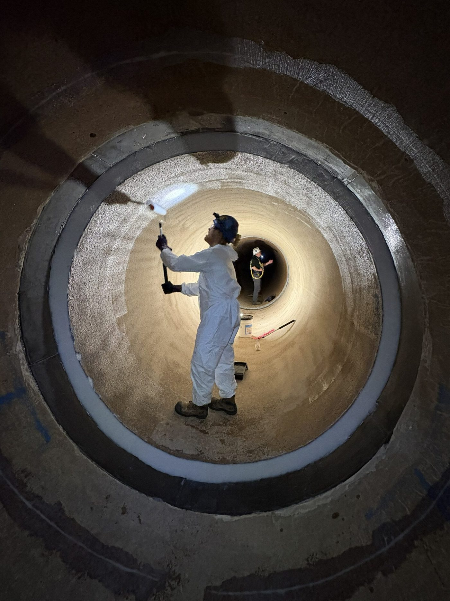

From emergency live-leak containment to permanent structural rehabilitation, our range covers pipeline, process piping and infrastructure repair across a wide range of pressures, temperatures and chemical environments.
A pretensioned composite repair sleeve combining a unidirectional e-glass coil, a high-modulus filler material and a high lap-shear strength adhesive — engineered for high-pressure transmission pipelines.
A rigorously tested carbon fibre composite solution for the permanent repair and rehabilitation of pipelines and piping structures suffering from common and complex anomalies.
A patented, pre-impregnated fibreglass composite activated by salt or fresh water, capable of repairing and reinforcing virtually any pipe within minutes of application.
A pre-saturated, bi-directional fibreglass composite for repairing and reinforcing internal and external corrosion on piping systems and structures with complex geometry.
A field-saturated carbon fibre cloth system applied with two-part epoxy, functioning as both a pressure-containing leak seal and a hoop/axial structural reinforcement.
A field-saturated fibreglass repair system used globally across plants, refineries, tank farms, terminals and offshore assets for pressure-containing and reinforcing repairs.
Designed for simple, instant, tamper-proof repair of active gas leaks without interrupting service — permanently sealing leaks immediately upon passing a leak test.
A durable, easy-to-apply fibreglass tape system protecting pipe against corrosion, abrasion and impact — suitable for underwater application on PVC and metal pipe.
A powder-coated carbon steel leak-sealing clamp with an internal rubber patch, engineered for straightforward, secure sealing on small to mid-diameter pipe.
An easy-to-install, factory-saturated, bi-directional fibreglass solution for on-site permanent repair of corroded and dented pipelines, eliminating field saturation and mixing.
A fast, optimized strapping system for quick and safe temporary leak containment, using embedded raised teeth and a low-profile buckle for secure composite placement.
A custom-engineered composite repair system with superior chemical compatibility for corroded and damaged piping in harsh chemical services, including high-concentration acids.
A bi-axial, hybrid carbon and glass fibre, pre-saturated system blending the strength and stiffness of carbon with the ease of a moisture-cured, factory-saturated polyurethane.
A multi-layered, high-strength corrosion-resistant fibreglass split sleeve system designed for repair and reinforcement in tight quarters, hard-to-access pipe, and subsea pipe.
Under-pressure (UP) and non-pressurized (NP) kits packaged and delivered as complete systems for quick repairs on pipes up to 10 inches in diameter, including a chemically resistant NP variant.
Riser repair and reinforcement kits for simple, instant, tamper-proof repair on non-leaking natural gas piping with up to 80% wall loss, without shutdown or pipe replacement.
A unidirectional fibreglass sleeve sized to a specific pipe diameter, isolating pipe within casings and eliminating the integrity issues that arise when pipe is pulled through casing.
A patented system resolving crevice corrosion caused by coating failure and direct metal-to-metal contact, using a pre-formed fibreglass wear pad and protective adhesive coating.
A mechanical protection system for support and hanger locations at terminals, plants and refineries — a Clock Spring derivative, applied quickly with no special tools required.
An Abrasion Resistant Overcoat (ARO) protecting field joint and mainline coatings from mechanical stress and scarring during horizontal directional drilling, thrust boring and microtunneling.

Our composite systems are installed by trained technicians on live infrastructure worldwide — from offshore risers to buried pipe and process piping.

Send us your pipe diameter, pressure rating, operating temperature and repair scenario, and we'll recommend the right composite system for the job.